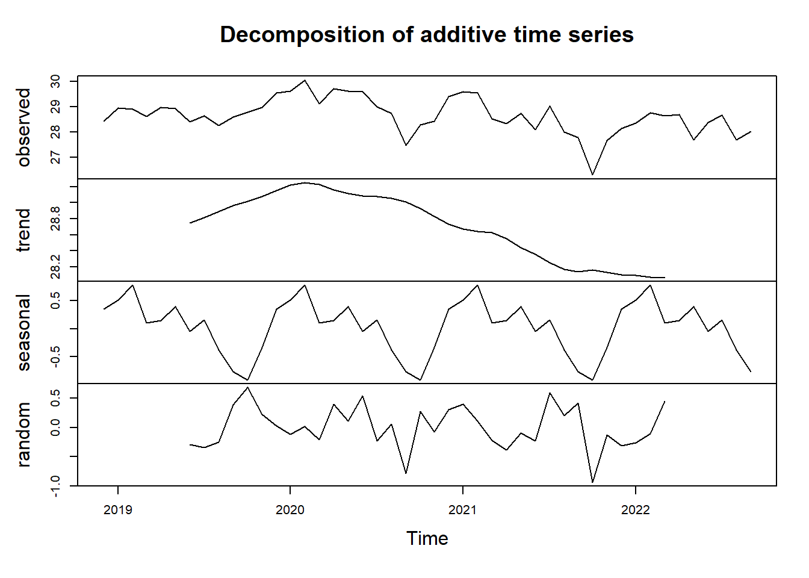
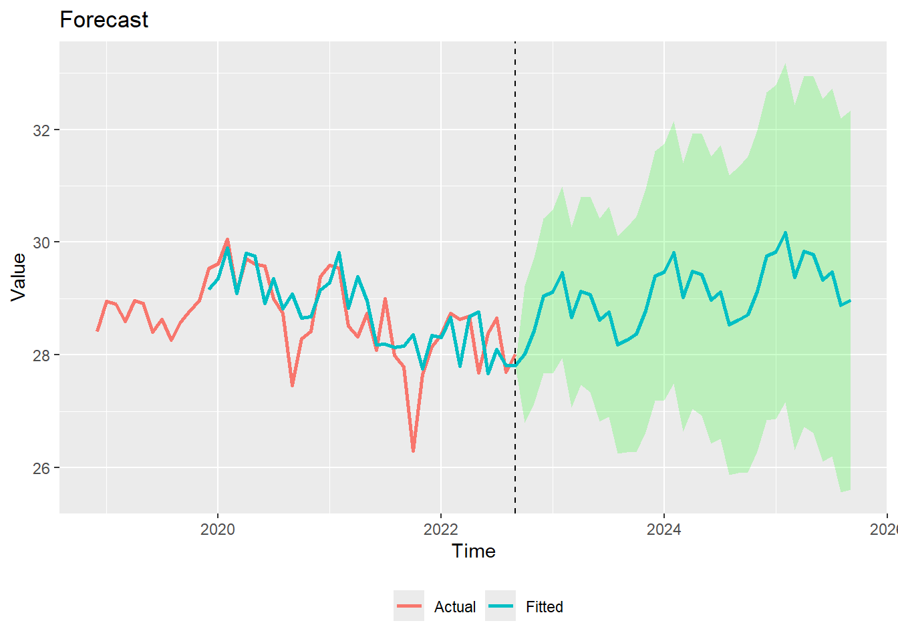

pacman::p_load(
ggplot2,
ggthemes,
tidyverse,
data.table,
zoo,
ggfortify,
reshape,
MLmetrics
)Climate and Dengue in Singapore
1. Overview
short intro here
2. Getting Started
2.1 Loading libraries
In this exercise, we will be requiring the following libraries.
2.2 Data import
For this exercise, we will be using the climate data sets from the Meteorological Service Singapore and the dengue data set from the SGCharts: Outbreak website.
2.2.1 Climate data
Historical daily climate records can be downloaded directly from this page in the Meteorological Service Singapore web page.
However, there are several things to note about this data set:
There are a total of 63 weather stations in Singapore, out of which, only 18 of them keeps records of rainfall, temperature, and wind speed. The other 41 only has rainfall records. As such, we will only look at the 18 stations with all records for consistency.
The oldest data dates back to 1980, but only in a few stations. In fact, from 2009, manual observations were gradually replaced by automated meteorological instruments. Therefore, we will try to keep our analysis limited to data from 2009 where possible.
On the more technical side of things, the data can only be downloaded for 1 weather station for 1 month at a time. If we were to download the data for the last 20 years manually, it would take 20years * 12months * 22stations = 5,280 iterations of downloads by hand. To tackle this task efficiently, a script is written to download the data automatically from the url provided.
This can be done simply by using the data.table::fread function with the url. For example, the code chunk below shows 1 iteration of download for Changi weather station for the month of January in 2024.
data.table::fread("http://www.weather.gov.sg/files/dailydata/DAILYDATA_S24_202401.csv") Station Year Month Day Daily Rainfall Total (mm)
1: Changi 2024 1 1 49.6
2: Changi 2024 1 2 0.4
3: Changi 2024 1 3 8.8
4: Changi 2024 1 4 80.6
5: Changi 2024 1 5 4.2
6: Changi 2024 1 6 0.6
7: Changi 2024 1 7 64.0
8: Changi 2024 1 8 0.0
9: Changi 2024 1 9 2.6
10: Changi 2024 1 10 63.2
11: Changi 2024 1 11 0.0
12: Changi 2024 1 12 12.4
13: Changi 2024 1 13 0.0
14: Changi 2024 1 14 0.0
15: Changi 2024 1 15 0.4
16: Changi 2024 1 16 20.6
17: Changi 2024 1 17 5.6
18: Changi 2024 1 18 0.4
19: Changi 2024 1 19 17.0
20: Changi 2024 1 20 23.4
21: Changi 2024 1 21 13.4
22: Changi 2024 1 22 0.0
23: Changi 2024 1 23 43.4
24: Changi 2024 1 24 34.0
25: Changi 2024 1 25 54.6
26: Changi 2024 1 26 0.0
27: Changi 2024 1 27 0.0
28: Changi 2024 1 28 0.4
29: Changi 2024 1 29 0.0
30: Changi 2024 1 30 0.0
31: Changi 2024 1 31 0.0
Station Year Month Day Daily Rainfall Total (mm)
Highest 30 min Rainfall (mm) Highest 60 min Rainfall (mm)
1: 24.6 32.4
2: 0.4 0.4
3: 8.2 8.8
4: 17.6 22.4
5: 3.0 3.0
6: 0.6 0.6
7: 12.8 16.4
8: 0.0 0.0
9: 0.8 1.0
10: 19.0 29.6
11: 0.0 0.0
12: 5.6 6.0
13: 0.0 0.0
14: 0.0 0.0
15: 0.2 0.2
16: 11.6 14.8
17: 4.2 4.4
18: 0.2 0.2
19: 5.2 7.0
20: 4.6 6.6
21: 10.6 12.8
22: 0.0 0.0
23: 35.6 43.0
24: 13.8 19.4
25: 29.4 42.0
26: 0.0 0.0
27: 0.0 0.0
28: 0.2 0.4
29: 0.0 0.0
30: 0.0 0.0
31: 0.0 0.0
Highest 30 min Rainfall (mm) Highest 60 min Rainfall (mm)
Highest 120 min Rainfall (mm) Mean Temperature (°C)
1: 37.2 25.6
2: 0.4 27.3
3: 8.8 27.1
4: 31.6 24.8
5: 3.4 26.6
6: 0.6 27.6
7: 26.0 24.5
8: 0.0 26.7
9: 1.0 26.7
10: 45.8 26.3
11: 0.0 27.4
12: 6.4 25.3
13: 0.0 27.0
14: 0.0 27.6
15: 0.2 27.8
16: 17.8 26.6
17: 4.6 27.4
18: 0.2 27.0
19: 10.8 26.3
20: 8.6 24.5
21: 13.4 26.9
22: 0.0 27.6
23: 43.4 27.0
24: 24.8 26.7
25: 48.6 25.7
26: 0.0 28.0
27: 0.0 28.2
28: 0.4 27.8
29: 0.0 28.0
30: 0.0 27.8
31: 0.0 27.7
Highest 120 min Rainfall (mm) Mean Temperature (°C)
Maximum Temperature (°C) Minimum Temperature (°C) Mean Wind Speed (km/h)
1: 28.8 24.2 9.6
2: 32.0 24.7 12.1
3: 31.5 24.5 10.0
4: 26.3 23.4 10.8
5: 29.7 24.4 14.4
6: 31.2 25.4 10.7
7: 26.9 23.2 8.3
8: 31.4 23.4 9.6
9: 30.4 24.6 10.6
10: 29.3 24.3 9.4
11: 30.0 25.4 13.2
12: 26.9 23.4 10.9
13: 31.0 24.4 8.3
14: 31.1 25.7 12.1
15: 31.3 25.5 15.1
16: 30.4 23.9 11.6
17: 31.2 24.8 18.5
18: 29.9 25.5 12.2
19: 30.7 23.7 9.3
20: 26.1 23.3 9.0
21: 32.3 23.4 10.5
22: 31.5 24.8 11.1
23: 32.9 23.8 9.9
24: 30.4 23.9 11.9
25: 30.2 23.8 11.0
26: 31.6 25.4 20.3
27: 31.2 26.7 20.4
28: 31.4 25.4 18.1
29: 31.2 26.2 19.6
30: 31.6 25.6 15.6
31: 32.0 25.5 16.1
Maximum Temperature (°C) Minimum Temperature (°C) Mean Wind Speed (km/h)
Max Wind Speed (km/h)
1: 35.2
2: 40.7
3: 35.2
4: 31.5
5: 46.3
6: 31.5
7: 33.3
8: 31.5
9: 35.2
10: 53.7
11: 37.0
12: 42.6
13: 38.9
14: 35.2
15: 46.3
16: 38.9
17: 57.4
18: 50.0
19: 42.6
20: 31.5
21: 35.2
22: 29.6
23: 57.4
24: 37.0
25: 37.0
26: 48.2
27: 44.4
28: 46.3
29: 46.3
30: 37.0
31: 40.7
Max Wind Speed (km/h)Now, we want to write a for loop to iterate over all 18 stations. Each station is identified by a unique key value represented in the following list.
stations = c(
"paya lebar" = "06",
"tengah" = "23",
"changi" = "24",
"seletar" = "25",
"tai seng" = "43",
"jurong west" = "44",
"ang mo kio" = "109",
"clementi" = "50",
"admiralty" = "104",
"sentosa" = "60",
"pulau ubin" = "106",
"east coast parkway" = "107",
"marina barrage" = "108",
"newton" = "111",
"tuas south" = "115",
"pasir panjang" = "116",
"jurong island" = "117",
"choa chu kang south" = "121"
)We also want to iterate over the years and month number in the url. For now, we will download the last 20 years of data.
Another issue that we encountered was that some of the column names changed at certain years either due to a different spelling or symbol. There is also many white spaces in the name, which could make coding more tedious later on. As such, I opted to change all the column names to simpler short forms with underscore as the separator instead of space.
The code chunk below shows the list of old to new column names. A function is also written for the renaming task, to rename the columns as we download the data sets 1 by 1. This helps with the data.table::rbindlist used in the loop as all the column names needs to be the same as the data set before.
col_names = c(
"Station" = "Station",
"Year" = "Year",
"Month" = "Month",
"Daily Rainfall Total (mm)" = "daily_rainfall",
"Highest 30 Min Rainfall (mm)" = "highest_30m_rainfall",
"Highest 30 min Rainfall (mm)" = "highest_30m_rainfall",
"Highest 60 Min Rainfall (mm)" = "highest_60m_rainfall",
"Highest 60 min Rainfall (mm)" = "highest_60m_rainfall",
"Highest 120 Min Rainfall (mm)" = "highest_120m_rainfall",
"Highest 120 min Rainfall (mm)" = "highest_120m_rainfall",
"Mean Temperature (°C)" = "mean_temp",
"Mean Temperature (°C)" = "mean_temp",
"Mean Temperature (°C)" = "mean_temp",
"Maximum Temperature (°C)" = "max_temp",
"Maximum Temperature (°C)" = "max_temp",
"Maximum Temperature (°C)" = "max_temp",
"Minimum Temperature (°C)" = "min_temp",
"Minimum Temperature (°C)" = "min_temp",
"Minimum Temperature (°C)" = "min_temp",
"Mean Wind Speed (km/h)" = "mean_wind",
"Max Wind Speed (km/h)" = "max_wind"
)
clean_names <- function(df, col_names) {
for (n in names(col_names)) {
names(df)[names(df) == n] <- col_names[[n]]
}
return (df)
}Finally, we can write our loop. The full code is shown below.
Show code
pad_zero <- function(num) {
if (num < 10) {
return (paste0("0", as.character(num)))
} else {
return (as.character(num))
}
}
df <- data.table()
for (station in stations) {
for (y in 3:23) {
for (m in 1:12) {
year <- pad_zero(y)
month <- pad_zero(m)
tryCatch(
{
joining_df <- data.table::fread(paste0(
"http://www.weather.gov.sg/files/dailydata/DAILYDATA_S",
station,
"_20",
year,
month,
".csv"),
encoding = "Latin-1")
joining_df <- clean_names(joining_df, col_names)
df <- rbindlist(list(df, joining_df), use.names=TRUE, fill=TRUE)
}, error = function(e) {
print(e)
}
)
}
}
}After downloading, we save the data in a csv file with the data.table::fwrite function.
fwrite(df, "data/clean_climate_data.csv")2.2.2 Weather Station data
The coordinates of each weather station can be found here. Due to the small number, I have manually collated them in a csv file and saved it.
2.2.3 Load data
Assuming we had already saved off the data previously, we will now load the data sets using the readr::read_csv function
climate <- data.table::fread("data/clean_climate_data.csv", encoding="Latin-1") %>% as.data.frame()3. Preliminary EDA
In this section, we will perform some preliminary exploratory analysis to understand how our data looks like as a time series. This will help us determine whether each variable can or can not be used, or what additional wrangling that is required to be done before the time series analysis is possible.
But first, we have to do some additional cleaning as well to prevent errors.
3.1 Remove unwanted characters
There are many observations with “-”. To avoid errors, we will change all of them to 0s.
climate <- data.frame(lapply(climate, function(x) gsub("—", 0, x)), stringsAsFactors=F)3.2 Data type
Next, we want to ensure that all columns are in their correct data type. For Station, Year, Month, and Day, we want them to be factors. The rest should be numerical.
For those values that were coerced as NA, we will convert them to 0 as well.
climate[c("Station", "Year", "Month", "Day")] <- lapply(climate[c("Station", "Year", "Month", "Day")] , factor)
climate[!names(climate) %in% c("Station", "Year", "Month", "Day")] <- lapply(climate[!names(climate) %in% c("Station", "Year", "Month", "Day")] , as.numeric)
climate[is.na(climate)] <- 03.3 Date column
We also want a date column for easier sorting in chronological order. To do that, we can use the zoo::as.Date function.
climate$date <- as.Date(with(climate, paste(Year, Month, Day,sep="-")), "%Y-%m-%d")
climate <- climate[order(climate$date), ]3.4 Daily Mean Temperature, Rainfall, and Wind
Let us explore how the mean temperature, rainfall, and wind looks like in the past 20 years.
The code chunk below plots the daily mean temperature over the last 20 years for each weather station. Similar code was used to plot the chart for rainfall and temperature as well.
Show code
ggplot() +
geom_line(data = climate, aes(x=date, y=mean_temp, colour=Station)) +
facet_wrap(~Station) +
ggtitle("Daily Mean Temperature in last 20 years")
Show code
ggplot() +
geom_line(data = climate, aes(x=date, y=daily_rainfall, colour=Station)) +
facet_wrap(~Station) +
ggtitle("Daily rainfall in the last 20 years")
Show code
ggplot() +
geom_line(data = climate, aes(x=date, y=mean_wind, colour=Station)) +
facet_wrap(~Station) +
ggtitle("Daily mean wind speed in the last 20 years")
Insights
- The start date of each weather station varies. This should be taken into account when fitting the model, as well as in the date range selection in the Shiny App.
- There are many periods within the time series where the data is missing, especially so in temperature and wind. To deal with this, we can take the mean value of that month from other years as a filler value. For example, if jan 2010 is missing, we can use the mean value from jan 2003-2009, and 2011-2023 to fill the gap.
- Daily rainfall has many 0 values, representing days without rain. This however, makes it difficult to model a time series. Thus, dates will be rolled up to monthly levels and we will analyse mean monthly values instead. To be consistent, we will use monthly levels for temperature and wind data as well.
Non-Captured v.s Missing data
Non-captured data refers to the missing data before the date when the weather station started collecting that data. We do not want to modify non-captured data.
Missing data refers to the data after the start date that is captured but missing for whatever reasons. We want to fill these gaps with appropriate estimation techniques.
4. Data Wrangling
4.1 Roll up to Monthly levels
As there are many instances of 0s within each month, we will have to ignore them as they will pull down the monthly average temperature or wind. Therefore, a function is written to calculate the non-zero mean value instead. However, this is not needed for rainfall as 0s would mean days with no rain.
# Function to find non-zero mean from a dateframe column
non_zero_mean <- function(x) {
y <- mean(x[x!=0])
return (y)
}Next, we use the dplyr::group_by and dplyr::summarise functions to calculate the monthly average for all variables. We also re-create the date column as a function of year and month using zoo::as.yearmon.
# Apply non-zero means to monthly temp and wind variables
# Apply mean to monthly rain variables
monthly_climate <- climate %>%
group_by(Station, Year, Month) %>%
summarise(mean_temp = non_zero_mean(mean_temp),
max_temp = non_zero_mean(max_temp),
min_temp = non_zero_mean(min_temp),
mean_wind = non_zero_mean(mean_wind),
max_wind = non_zero_mean(max_wind),
mean_rain = mean(daily_rainfall),
mean_30m_rain = mean(highest_30m_rainfall),
mean_60m_rain = mean(highest_60m_rainfall),
mean_120m_rain = mean(highest_120m_rainfall),
date = min(date))
# Format date column as yearmon format
monthly_climate$date <- as.yearmon(monthly_climate$date)
# Change any NAs to 0
monthly_climate[is.na(monthly_climate)] <- 04.2 Filling missing data with non-zero means
This task requires several steps which is performed by the code chunk below.
Iterate through all relevant temperature and wind variables.
For each variable, iterate through all the stations.
For each station, find the months where all data is missing.
Lastly, for each of these months, we replace the NA or 0 with the non-zero mean of the same month in other years for that station. For example, if Changi station jan 2010 is missing, then we will replace the value with the non-zero mean from Changi station jan 2003-2009, and 2011-2023.
Show code
# Function to replace missing data with non-zero mean
replace_zero <- function(df, s, y, m, col) {
df[df$Station == s &
df$Year == y &
df$Month == m, col][[1]] <- non_zero_mean(df[df$Station == s & df$Month == m, col])
return (df)
}
# Define temp and wind variables in list
columns = c("mean_temp", "max_temp", "min_temp", "mean_wind", "max_wind")
# Create results data frame as a copy of monthly_climate
# We will fill in the new non-zero values
filled_monthly_climate <- monthly_climate
# Loop to find missing data
for (c in columns) {
for (s in levels(monthly_climate$Station)) {
# Isolate data for station and climate variable
temp <- monthly_climate[monthly_climate$Station == s,
c("Station", "Year", "Month", "date", c)]
# Sort by date
temp <- temp[order(temp$date), ]
# Get cumulative sum to find start date
temp$cum_sum <- cumsum(temp[c])
# Loop years and months to find missing months
for (y in levels(temp$Year)) {
for (m in levels(temp$Month)) {
# Extract value and cumulative sum
value <- temp[temp$Year == y &
temp$Month == m, c][[1]]
cum_sum <- temp[temp$Year == y &
temp$Month == m, "cum_sum"][[1]]
# If value is numeric(0), next
# This usually occurs for rows with non-captured data
if (length(value) == 0) next
# If value == 0 and is after start date (cumulative sum > 0)
# Replace zero with non-zero means
if (value == 0 & cum_sum > 0) {
temp <- replace_zero(temp, s, y, m, c)
}
# If value is before start date, replace 0 with NA
# This will prevent ggplot from plotting a 0 value for
# data points before the start date
if (cum_sum == 0) {
temp[
temp$Year == y &
temp$Month == m,
c
] <- NaN
}
# Extract filled value from temp
new_value <- temp[temp$Year == y &
temp$Month == m, c][[1]]
# Assign to results data frame
filled_monthly_climate[
filled_monthly_climate$Station == s &
filled_monthly_climate$Year == y &
filled_monthly_climate$Month == m,
c
] <- new_value
}
}
}
}4.3 Final look at data
Let us chart the same variables once more and check if all values are fine now.
Show code
ggplot() +
geom_line(data = filled_monthly_climate, aes(x=date, y=mean_temp, colour=Station)) +
facet_wrap(~Station) +
ggtitle("Monthly Mean Temperature in last 20 years")
Show code
ggplot() +
geom_line(data = filled_monthly_climate, aes(x=date, y=mean_rain, colour=Station)) +
facet_wrap(~Station) +
ggtitle("Monthly rainfall in the last 20 years")
Show code
ggplot() +
geom_line(data = filled_monthly_climate, aes(x=date, y=mean_wind, colour=Station)) +
facet_wrap(~Station) +
ggtitle("Monthly mean wind speed in the last 20 years")
5. Time Series Forecasting
In this section, we will be using time series econometric models to forecast future climate conditions in Singapore.
5.1 Input variables
This section determines the variable selection done by the user of the Shiny Application. It is split into 2 phases.
Phase 1
User selects weather station and climate variable using drop-down list.
The code will filter out the selected weather station and climate variable, and obtain the earliest start date available.
# User Input
target_station <- "Paya Lebar"
target_variable <- "mean_temp"# Filter out target data from monthly_climate
target <- filled_monthly_climate[
filled_monthly_climate$Station == target_station,
c("Station", "Year", "Month", "date", target_variable)
]
# Convert NAs back to zero for sorting and cumsum
target[is.na(target)] <- 0
target <- target[order(target$date), ]
# Finding earliest start date using cumulative sum
target$cumulative_sum <- cumsum(target[target_variable])
target <- target[target$cumulative_sum > 0, ]
y <- dplyr::first(target[order(target$date), "Year"])[[1]] %>%
as.character() %>%
as.numeric()
m <- dplyr::first(target[order(target$date), "Month"])[[1]] %>%
as.character() %>%
as.numeric()
print(paste0("Earliest start date: ", as.character(y), "-", as.character(m)))[1] "Earliest start date: 2017-9"Phase 2
User selects the start and end date using a slider (slider start date defined in step 2, end date is always Dec 2023), as well as training to test set ratio.
The code will slice the data according to the defined dates.
# User Input
target_date_start <- "2018-3"
target_date_end <- "2023-12"
train_test_split <- 0.8# Filter out defined time period
target <- target[target$date >= target_date_start, ]
target <- target[target$date <= target_date_end, ]
# Find row number when training ends and validation starts
split_train_end <- round(train_test_split*nrow(target)) - 1
split_val_start <- round(train_test_split*nrow(target))
# Check if there is no test, ie: train_test_split == 1
# if (target_date_end == target$date[split_val_start])
if (train_test_split == 1) {
validation = FALSE
} else {
validation = TRUE
}
# Create time series object
train_ts <- ts(target[target_variable],
frequency = 12,
start = c(
strsplit(target_date_start, "-")[[1]][1],
strsplit(target_date_end, "-")[[1]][2]
),
end = c(
as.numeric(year(target$date[split_train_end])),
as.numeric(month(target$date[split_train_end]))
))5.2 Model Fitting
In this section, we will use the inputs provided by the user to define the data that we will be using to fit the Holt Winters model.
HW <- HoltWinters(train_ts)
result_df <- target[,c("date",target_variable)]
if (validation) {
val_period <- nrow(target) - split_val_start
validation_preds <- predict(HW,
n.ahead = val_period)
result_df$fit <- NA
result_df$fit[13:(nrow(result_df)-val_period)] <- as.data.frame(HW$fitted)$xhat
result_df$val <- NA
result_df$val[(nrow(result_df)-val_period+1):nrow(result_df)] <- validation_preds
} else {
result_df$fit <- NA
result_df$fit[13:nrow(result_df)] <- as.data.frame(HW$fitted)$xhat
}g <- ggplot(data = result_df) +
geom_line(aes(x=date, y=.data[[target_variable]]), linewidth=1) +
geom_line(aes(x=date, y=fit), color="darkturquoise", linewidth=1)
if (validation) {
g <- g + geom_line(aes(x=date, y=val), color="coral", linewidth=1)
}
g <- g +
ggtitle("Actual vs Predicted") +
xlab("Date") +
ylab(str_to_title(gsub("_", " ", target_variable)))# data.frame(result_df[1], stack(result_df[2:ncol(result_df)]))components_dfts <- decompose(train_ts)
plot(components_dfts)
components_dfts$seasonal %>% data.frame() .
1 0.35069739
2 0.51637874
3 0.78184546
4 0.10795081
5 0.15214565
6 0.39058651
7 -0.04180193
8 0.15336817
9 -0.38469650
10 -0.76866902
11 -0.91787452
12 -0.33993077
13 0.35069739
14 0.51637874
15 0.78184546
16 0.10795081
17 0.15214565
18 0.39058651
19 -0.04180193
20 0.15336817
21 -0.38469650
22 -0.76866902
23 -0.91787452
24 -0.33993077
25 0.35069739
26 0.51637874
27 0.78184546
28 0.10795081
29 0.15214565
30 0.39058651
31 -0.04180193
32 0.15336817
33 -0.38469650
34 -0.76866902
35 -0.91787452
36 -0.33993077
37 0.35069739
38 0.51637874
39 0.78184546
40 0.10795081
41 0.15214565
42 0.39058651
43 -0.04180193
44 0.15336817
45 -0.38469650
46 -0.76866902mape <- MAPE(validation_preds, validation) * 100
print(mape)[1] 2770.8585.2 Model Tuning
After fitting the model, users are allowed to view validation results and decide if they wish to further tune the model by adjusting certain variables.
alpha = 0
beta = 0
gamma = 05.3 Model Forecast
Lastly, once parameters are confirmed, we can proceed to make predictions and plot them.
# https://www.r-bloggers.com/2012/07/holt-winters-forecast-using-ggplot2/
HWplot <- function(ts_object,
n.ahead = 4,
CI = .95,
error.ribbon = 'green',
line.size = 1) {
hw_object <- HoltWinters(ts_object)
forecast <- predict(hw_object,
n.ahead = n.ahead,
prediction.interval = T,
level = CI)
df <- as.data.frame(forecast)
for_values <- data.frame(time = round(time(forecast), 3),
value_forecast = df$fit,
dev = df$upr - df$fit)
fitted_values <- data.frame(time = round(time(hw_object$fitted), 3),
fitted = as.data.frame(hw_object$fitted)$xhat)
actual_values <- data.frame(time = round(time(hw_object$x), 3),
Actual = c(hw_object$x))
graphset <- merge(actual_values, fitted_values, by='time', all=TRUE)
graphset <- merge(graphset, for_values, all=TRUE, by='time')
graphset[is.na(graphset$dev), ]$dev <- 0
graphset$Fitted <- c(rep(NA, NROW(graphset) - (NROW(for_values) + NROW(fitted_values))), fitted_values$fitted, for_values$value_forecast)
graphset.melt <- melt(graphset[, c('time', 'Actual', 'Fitted')], id='time')
p <- ggplot(graphset.melt,
aes(x=time, y=value)) +
geom_ribbon(data=graphset,
aes(x=time,
y=Fitted,
ymin=Fitted-dev,
ymax=Fitted + dev),
alpha=.2,
fill=error.ribbon) +
geom_line(aes(colour=variable),
linewidth=line.size) +
geom_vline(xintercept=max(actual_values$time),
lty=2) +
xlab('Time') +
ylab('Value') +
theme(legend.position='bottom') +
scale_colour_hue('')
return(p)
}HWplot(train_ts, n.ahead=36, CI=.95, error.ribbon='green',line.size=1)
6. Storyboard UI
This section describes the UI design and the intended work flow for users.
6.1 User input
The user starts by selecting the weather station and climate variable of interest. These are selected from a pre-defined drop down list.
6.2 Time frame and validation
After the step in 6.1, the user will be prompted to select the time period as well as train test split.
The time period is selected using a slider. The start and end date of the slider is specific to the weather station and climate variable chosen earlier.
The train test split is a floating number between 0.5 and 1.
6.3 Model Fit
Next, the user will click the “Fit Model” button. This will trigger a couple of events.
Firstly, this fits a Holts Winter model over the filtered data set based on the selected variables in 6.1 and 6.2. In addition, predictions will be made for the validation period with the fitted model.
Secondly, left panel 3 and 4 will be revealed to the user. I will elaborate on these 2 panels in the following sections.
The main screen’s first tab will now display a Actual vs Predicted plot. Predicted lines for training period and validation period will be in different colours.
The second tab will show a plot of the decomposed elements of the model, namely:
Observed
Trend
Season
Random
At the bottom of the screen, the training and validation MAPE and MAE will be shown in 4 separate boxes.
6.4 Model Tuning
Left panel 3 shows the default parameters used in the Holts Winter model. Users will be allowed to change these parameters within their respective allowable limits and re-fit the model using the “Fit Model” button to observe the new changes.
6.5 Model forecast
Left panel 4 is used for forecasting. Once users are satisfied with the tuned parameters, they can input the number of periods to be forecasted and click the “Forecast” button to generate the forecast results.
This will populate the Right screen tab 1 with the forecast plot.
Right screen tab 2 contains a cycle plot which shows the results from a month by month view.